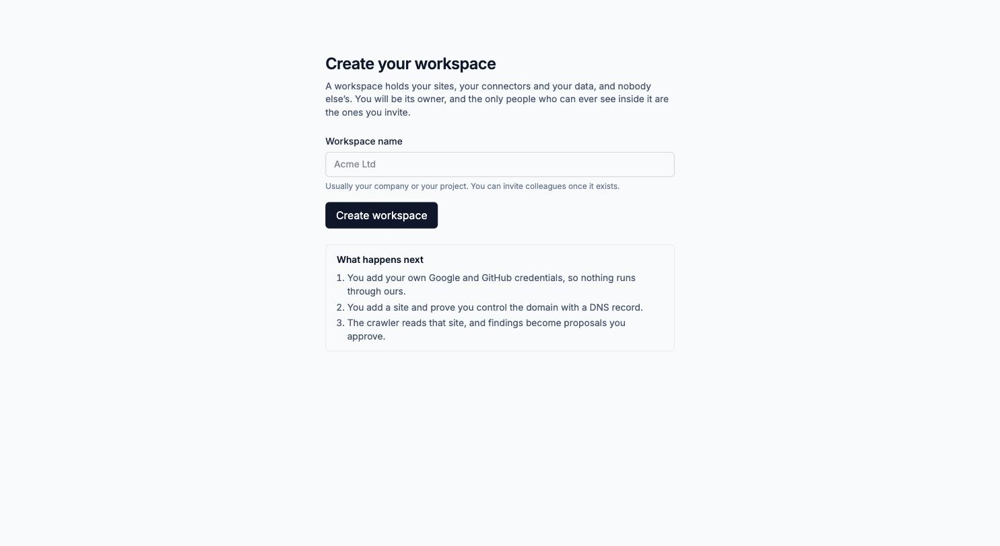
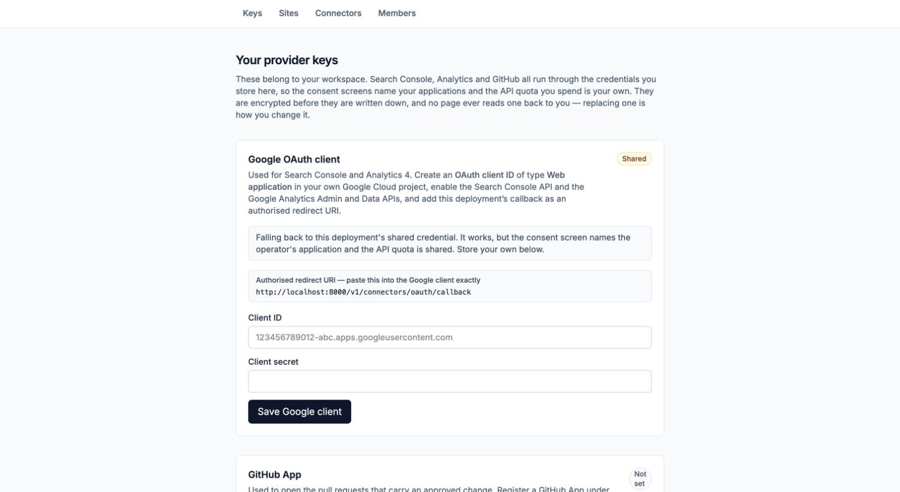
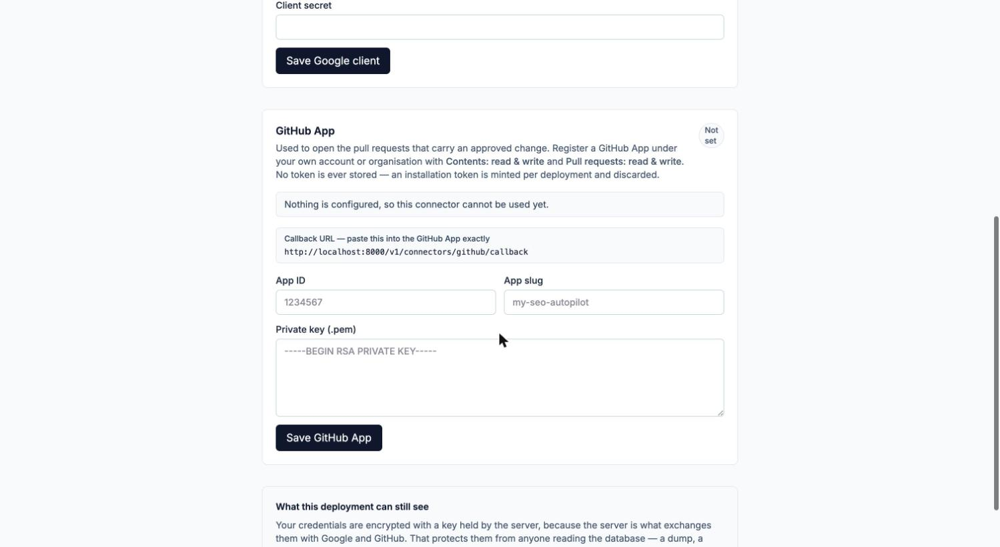
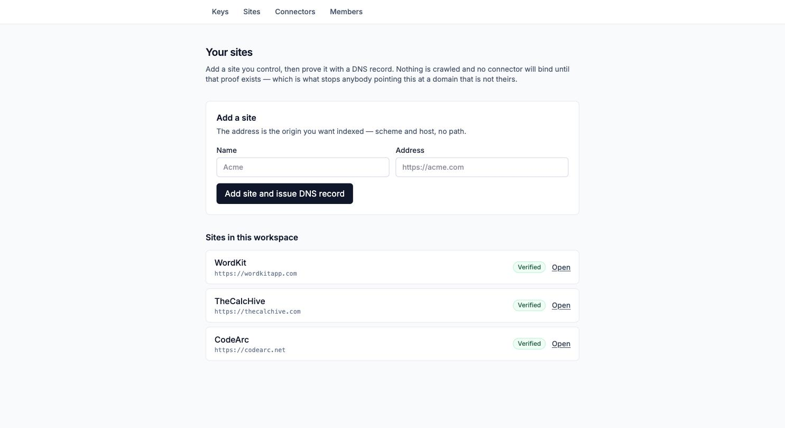
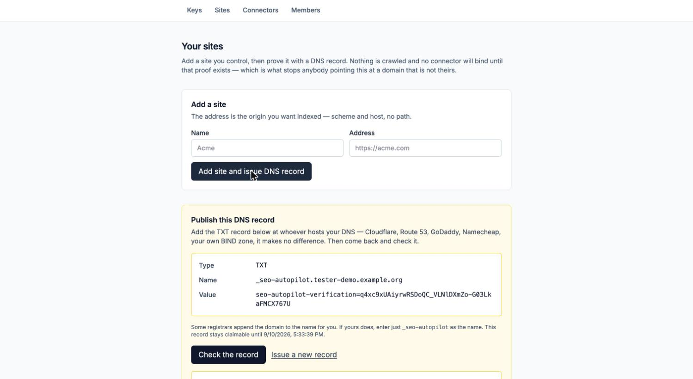
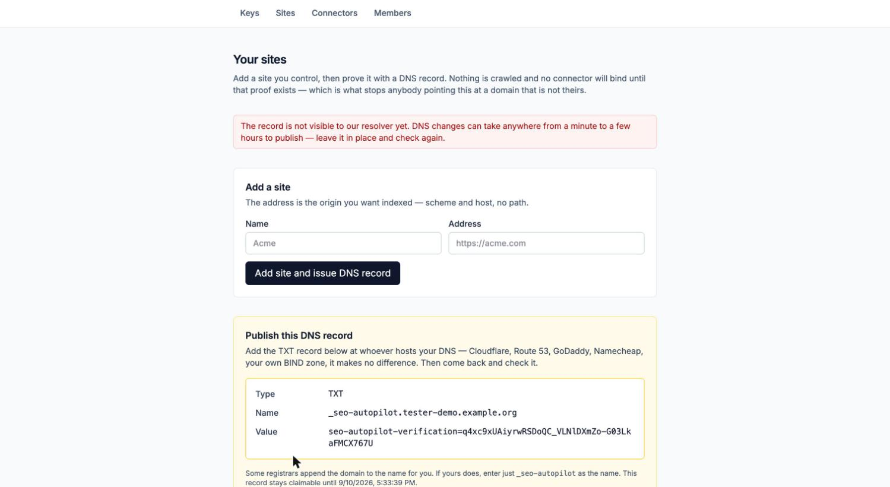
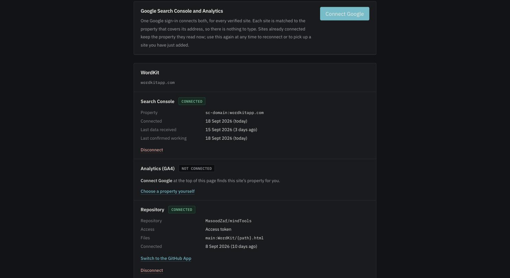

Google shows an "unverified app" warning when he connects. He clicks Advanced → Go to SEO Autopilot. The warning stays until Google reviews the app, which also caps the app at 100 users.
SEO Autopilot · seo.oryxenlabs.com
Giving an external tester
their own workspace
Everything needed to take somebody from a Google account they already have to a first reviewed proposal on a domain they own, in a workspace that can see nothing of yours. Steps are marked for whoever performs them.
- One Google sign-in connects Search Console and Analytics for every site, and finds each site's property itself. There is nothing to type.
- A repository connects in one step through a GitHub App, with no token to copy.
- Settings → Connectors is now a connection manager. It shows what is connected, when data last arrived and when it was last confirmed working, with Reconnect and Disconnect on each. A red banner appears on every page while anything is broken.
- Connections renew themselves daily. The Google project is published, so they no longer expire after 7 days.
- Steps 03 and 04 are now optional. A tester can use the shared SEO Autopilot Google app instead of registering their own.
Operator setup
OperatorThis is not the first step of the walkthrough; the tester's sequence starts at 01. It is setup that happens once, ever, and nearly all of it is done.
On the host: production mode (APP_ENV=production, the old shared pilot token disabled), the HTTP password gate is off, and /privacy and /terms are live.
Sign-in (Google project "SEO Autopilot Sign-in"): published on 10 September and In production. Any Google account can sign in, with no warning screen.
Search Console and Analytics (Google project 417045140496, "SEO Autopilot"): published on 18 September and In production, but not verified by Google. That is the source of the warning at the top of this document. A tester who does not store their own Google client (step 03) connects through this one.
GitHub App seo-autopilot-oryxen (ID 4992375): registered on 18 September, public, with Contents and Pull requests read and write, and its setup URL pointing at this deployment.
So for each new tester there is exactly one action:
- Send them this document and the address
https://seo.oryxenlabs.com. There is nothing to install and no invitation to accept; they create their own workspace on first sign-in.
The App's key is stored under Keys in the operator's workspace only. The server has no shared GitHub App, so today a tester's workspace offers Connect GitHub only if they register their own App (step 04). Otherwise they connect with an access token.
To let every tester use seo-autopilot-oryxen without registering anything, set GITHUB_APP_ID=4992375, GITHUB_APP_SLUG=seo-autopilot-oryxen and GITHUB_APP_PRIVATE_KEY (the .pem) in /opt/seo-autopilot/.env.local, then recreate the api container. The operator has to do this, because it means handling the private key.
Google decides whether an app needs a verification review from the scopes on the project's consent screen, not from what an individual client asks for. Sign-in asks only for openid email profile, so it publishes with no review and no warning. The data scopes (webmasters.readonly, analytics.readonly) are sensitive and live in the second project. That project is the one showing the unverified-app warning until Google reviews it.
Never add a sensitive scope to the sign-in project. Never strip the data scopes from the connector project either: every existing connection's refresh token belongs to its client.
Do not invite a tester into your workspace from Settings → Members. An invitation puts somebody inside an existing workspace, where they would see codearc.net, thecalchive.com and wordkitapp.com, every connector attached to them, and every open proposal, and could act on all of it. Members is for colleagues who should share your data. A tester should not.
Sign in
TesterA Google account. A domain you control, with access to edit its DNS. Optionally a GitHub repository holding that site's pages, if you want to test the part that opens pull requests.
- Open
https://seo.oryxenlabs.com. - Choose Continue with Google and complete the sign-in.
Your account is created on that first sign-in. It gives you an identity and, deliberately, access to nothing: there is no data anywhere yet that is yours.
Signing in never shows an "unverified app" warning; that appears only later, in step 07. If Google refuses the sign-in itself, tell the operator. Nothing is wrong with your account.
Create a workspace
TesterSigned in with no workspace, you land here. Name it after your company or the project you are testing with. The name is only a label, and the address it derives is generated for you.

You are taken to Settings → Keys afterwards. Since 18 September, steps 03 and 04 there are optional: you can go straight to step 05.
Your own Google OAuth client
Tester · optionalSkip this unless you specifically want Search Console and Analytics to run through your own Google Cloud project. Without it, step 07 connects through the shared SEO Autopilot app. That works for everyone and only costs the warning screen described at the top.
Reasons to use your own anyway: the consent screen then names your application, the API quota is yours, and revoking it affects nobody else.
In the Google Cloud console
- Create a project, or pick one you already have.
- Under APIs & Services → Library, enable the Google Search Console API, the Google Analytics Admin API and the Google Analytics Data API. A missing one is not reported until the connection fails much later.
- Under Google Auth Platform → Audience, choose External and fill in the required fields. Then publish the app (In production). An app left in Testing has its connections expire every 7 days, so step 07 would need repeating weekly.
- Under Clients, create an OAuth client ID of type Web application.
- Add one Authorised redirect URI. Copy it from the Keys page, which prints it from the deployment's own configuration so it cannot be mistyped or go stale.
Back in SEO Autopilot
Paste the client ID and client secret into Settings → Keys and save.

redirect_uri_mismatch at Google means the URI registered on the client is not character-for-character the one on the Keys page. A trailing slash counts. invalid_client means the ID and secret are not a pair; usually one was copied from a different client in the same project.
You should no longer meet either of these mid-connection. Saving a client now checks it against Google first: one that would be refused is not stored, and the Keys page prints the steps to fix it. If a sign-in is ever refused anyway, the Connections page says so and shows the same guide — you do not have to work out what happened from Google's error screen.
Your own GitHub App
Tester · optionalOnly needed to test deployment, the step where an approved change becomes a pull request. Everything up to approval works without it. You have three options:
- If the operator has shared their App (see Operator setup): skip this step. Connect GitHub will appear in step 07 on its own.
- Register your own App, as below, for a one-step connection with no token stored.
- Use an access token in step 07 instead. It needs contents and pull-request access to the repository.
Registering your own
- On GitHub: Settings → Developer settings → GitHub Apps → New GitHub App.
- Repository permissions: Contents: Read and write and Pull requests: Read and write. Nothing else is used. Untick Webhook → Active.
- Under Post installation, set the Setup URL to the GitHub callback printed on the Keys page, and tick Redirect on update.
- Create it, then Generate a private key. GitHub downloads a
.pemfile once; keep it. - On the Keys page, paste the App ID, the slug (the last part of the App's public URL) and the whole
.pem, BEGIN and END lines included.

No repository token is ever stored. When a deployment runs, a short-lived installation token is minted from the App and discarded. Uninstalling the App from your repository revokes everything, immediately, from your side.
Add a site
TesterGo to Settings → Sites. Give the site a name and its address: scheme and host only, no path. Adding it also issues the DNS challenge in the same action, because a site nobody has verified cannot be crawled or connected to anything.

Prove you control the domain
TesterA single TXT record. This works identically at every registrar: Cloudflare, Route 53, GoDaddy, Namecheap, or a zone file you edit by hand.

- Type
TXT- Name
_seo-autopilot.your-domain- Value
seo-autopilot-verification=the token shown on the page
Some registrars append your domain to whatever you type in the name field. If yours does, enter just _seo-autopilot. Then choose Check the record.

If, and only if, this domain's DNS is on Cloudflare, the panel has a collapsed section that publishes the record for you from a zone ID and a scoped API token (Zone / DNS / Edit on that one zone). The manual record above is the supported path and does exactly the same thing.
Connect your data sources
TesterChanged 18 SeptWith the site verified, go to Settings → Connectors (plain /settings takes you there too).
Search Console and Analytics: one click
- Press Connect Google at the top of the page.
- Choose the Google account that owns your Search Console and Analytics properties.
- Google shows "Google hasn't verified this app". Click Advanced, then Go to SEO Autopilot (unsafe). It is the operator's own app, and the warning stays until Google reviews it. If you stored your own client in step 03, you see your own app's name instead.
- Leave both permissions ticked (Search Console and Analytics) and continue.
You come back to the page with a line such as "Google connected: 2 connections linked." Every verified site in your workspace is matched to the property that covers its address. A domain property (sc-domain:example.com) is preferred over a URL-prefix one, and for Analytics the property must have a data stream on that host. A property that measures a different site is never attached.
- "… have no property this Google account can see" means that service shows Not connected for that site. Usually the property lives under another Google account; run Connect Google again with that account. Sites already connected are left exactly as they are.
- "Only one of the two permissions was granted" means a box was unticked. Run it again with both ticked.
- To bind a specific property instead of the automatic match, use Choose a property yourself under that service.

Repository
- With a GitHub App available (yours from step 04, or the operator's if shared): enter the repository as
owner/name, the base branch and the path template, then press Connect GitHub. On GitHub's page choose Only select repositories, pick that repository and press Install. You come straight back, connected. - Without one: the same fields plus an access token, then Connect with a token. You can switch to an App later with Switch to the GitHub App. Deploys keep using the token until the install finishes, then the token is destroyed.
The path template maps a URL path to a file and cannot be guessed: if the page at /pricing lives at site/pricing.html, the template is site/{path}.html. Getting it wrong produces a connection that passes its check and then finds no page.
Keeping connections alive
- Google connections are renewed automatically once a day; there is nothing to do.
- If one stops working (you revoked access at Google, or changed your password), it turns Needs reconnecting the same day and a red banner appears on every page. Press Reconnect: one Google sign-in repairs every site at once, each to the property it read before.
- Disconnect destroys the stored credential for that one site and service only. It does not touch Google, because revoking there would disconnect every other site connected through that Google account. To remove access at Google too, use myaccount.google.com/permissions.
Search Console suppresses rows below an anonymisation threshold, and a low-traffic site sits below it most days. Analytics collects nothing retroactively; its clock starts the day the tag goes live. Neither is a fault in the tool, and on a small site neither will show whether a change worked within a test window.
Crawl, and read the findings
TesterOpen the site from Sites → Open, or from the site cards at the top of the dashboard. Start a bounded crawl. When it finishes, the analysis turns page observations into findings, and findings into scored opportunities.
Read a few opportunities against the actual page before doing anything with them. The most useful thing a tester can report is an opportunity that is confidently wrong: a finding that does not match what the page really says.
A new site starts in Observe mode. Nothing is proposed or changed in Observe; raise it to Recommend from the dashboard when you want drafts.
Approve a change, and undo it
Tester- Turn an opportunity into a proposal from the workspace.
- Review the before and after. The proposal names the exact file and the exact edit.
- Approve it. Higher-risk changes need more than one approver, and the author of a proposal cannot approve it.
- Deploy it. This opens a pull request on your repository. It does not merge it.
- A human merges the pull request. Only then is the change live.
Rolling back opens a revert pull request, again for a person to merge. A change is undone when somebody merges the revert, not when the button is pressed, and the receipt reflects that honestly.
Close a revert pull request without merging it and watch what the receipt says. It should end up recording that the change is still live, because it is.
What is isolated, and what is not
Stated plainly, because a tester deciding which Google account to connect deserves an accurate answer rather than a reassuring one.
- Sites, crawls, findings, proposals, deployments and audit trail
- Your Search Console and Analytics grants, even when made through the shared SEO Autopilot app
- Your own Google OAuth client and GitHub App, if you stored them
- Members, and who can see the workspace
- Database rows: enforced by row-level security, not by application filtering, and tested against two live workspaces
- The server, its database and its logs
- The encryption key that seals stored credentials
- The Google client used for signing in
- The SEO Autopilot Google app, if you did not store your own client: its quota and its standing with Google
- Whoever operates the deployment
Your credentials are encrypted before they are written down, which protects them from anyone reading the database: a dump, a backup, a replica. It does not protect them from the operator, because the server has to be able to use them. If that matters for the account you are connecting, use one scoped to only the sites and repositories you are testing with, and remove it afterwards.
What is worth reporting
Anything at all is welcome, but these are the things nobody else can find.
| Report | Why it matters |
|---|---|
| A finding that is confidently wrong about your page | Precision has only ever been measured against three sites the operator owns. |
| Connect Google linking the wrong property, or none, for a site you own | The automatic match has only been run against the operator's three sites. |
| A connection turning Needs reconnecting when you changed nothing | It should only happen when access is revoked. Say which service, and when. |
| A step where you had to ask what to do next | This path has been walked by people who already knew the answers. |
| A button that appears to do nothing | This has been a real defect twice. Say what you clicked and what you expected. |
| An error message you could not act on | Quote it exactly, including any code, and say what you were doing. |
| Anything you saw that was not yours | Report immediately. Nothing from another workspace should ever be visible. |
To stop, Disconnect each connection under Settings → Connectors, remove any credentials from the Keys page, remove SEO Autopilot at myaccount.google.com/permissions, and uninstall the GitHub App from your repository. That revokes everything from your side without anyone else acting.
Updated against the build of 18 September 2026. Step 07's one-click Google connection and GitHub App install were run against production that day: four Search Console and Analytics connections were linked in one sign-in, and a repository was moved from a token to the App. Steps 01–06 and 08–09 are unchanged from the end-to-end walk of 9 September, and their screenshots come from that stack. If a screen differs from a picture here, trust the screen and say so. The redirect URIs in particular are printed by the application itself rather than copied into this document.